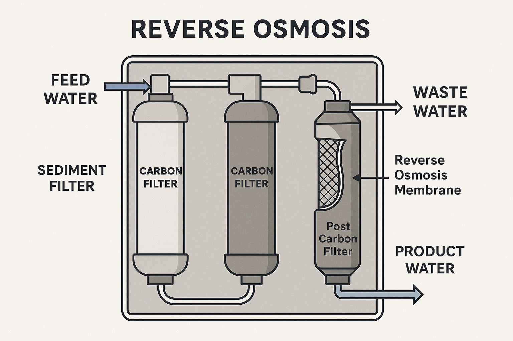

If you're looking to reduce waste, improve your family's health, and feel more in control of your water quality, a Reverse Osmosis (RO) system may be the right tool for the job. In a world where plastic bottles pile up and trust in municipal or well water quality varies, RO systems offer a middle path: clean, filtered water—without the landfill.
RO systems use pressure to push water through a semipermeable membrane that removes up to 99% of dissolved salts, lead, residual pharmaceuticals, chlorine, fluoride, and microplastics. Typical systems include a sediment pre-filter, carbon block filter, the RO membrane, and a post-carbon polishing filter. Some models add remineralization or UV sterilization stages.
Let’s face it: tap water has the lowest environmental impact—especially when it’s safe and palatable. However, for those who choose bottled water instead, RO systems offer a massive improvement. A single household switching from bottled water to an RO system can avoid thousands of plastic bottles per year.
Wastewater production is a concern—older RO units could waste 3-4 gallons for every 1 gallon filtered. Modern systems reduce this ratio to near 1:1. Some can be paired with rainwater or greywater reuse strategies to further mitigate this.
Here's a replacement filter pack for systems like the [123Filter](#): [Affiliate Link Placeholder]. Prices may vary.
Under-sink RO units are straightforward to install for most homeowners with basic plumbing skills. Key pitfalls to avoid:
Note that RO water can taste "flat" due to lack of minerals—remineralizing cartridges solve this easily.
RO systems aren't perfect, but they strike a powerful balance: they empower households to produce reliable, clean water with far less waste than bottled alternatives. They're a step toward decentralization, resilience, and stewardship.
Technically speaking, if you're happy with your tap water, there’s no lower-impact option than drinking it straight. But if you’re not—this might be the best of both worlds.
We aim to share tools and practices that improve both your life and the world. Some links may be affiliate links. If you’d like to champion sustainable water practices or know of a filter recycling program, reach out at: contact@getrichandsavetheworld.com.